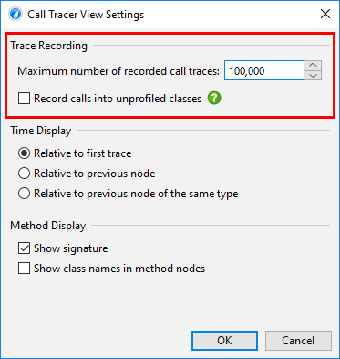
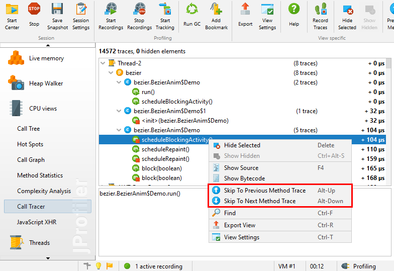
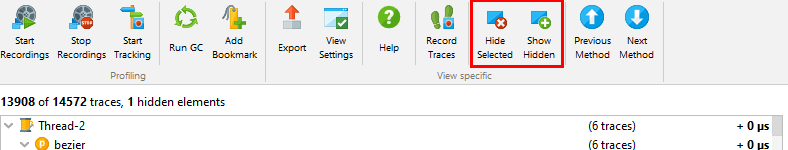

Method call recording in the call tree cumulates calls with the same call stacks. Keeping precise chronological information is usually not feasible because the memory requirements are huge and the volume of the recorded data makes any interpretation quite difficult.
However, in limited circumstances, it makes sense to trace calls and keep the entire chronological sequence. For example, you may want to analyze the precise interlacing of method calls of several cooperating threads. A debugger cannot step through such a use case. Alternatively, you would like to analyze a series of method invocations, but be able to go back and forth and not just see them once like in the debugger. JProfiler provides this functionality with the call tracer.
The call tracer has a separate recording action that can be activated in the call tracer view, with a trigger or with the profiling API. To avoid problems with excessive memory consumption, a cap is set on the maximum number of collected call traces. That cap is configurable in the view settings. The rate of collected traces heavily depends on your filter settings.
Call tracing only works when the method call recording type is set to instrumentation. Sampling does not keep track of single method calls, so it is technically not possible to collect call traces with sampling. Calls into compact-filtered classes are recorded in the call tracer, just like in the call tree. If you just want to focus on your own classes, you can exclude these calls in the view settings.

The traced method calls are displayed in a tree with three levels that make it easier to skip
related calls by collapsing them. The three groups are
threads,
 packages
and
packages
and  classes. Each time
the current value for any of these groups changes, a new grouping node is created.
classes. Each time
the current value for any of these groups changes, a new grouping node is created.
At the lowest level there are method entry and method exit nodes. Below the table with the call traces, the stack trace of the currently selected method trace is shown. If call traces into other methods have been recorded from the current method or if another thread interrupts the current method, the entry and exit nodes for the that method will not be adjacent. You can navigate on the method level only by using the Previous Method and Next Method actions.

The timing that is displayed on the traces and all grouping nodes refers to the first trace by default, but can be changed to show relative times since the previous node. If the previous node is the parent node, that difference will be zero. Also available is the option to show relative times with respect to the previous node of the same type.
Even with appropriate filters, a huge number of traces can be collected in a very short time. To eliminate traces that are of no interest, the call tracer allows you to quickly trim the displayed data. For example, certain threads might not be relevant or traces in certain packages or classes might not be interesting. Also, recursive method invocations can occupy a lot of space and you might want to eliminate those single methods only.
You can hide nodes by selecting them and pressing the delete key. All other instances of the selected nodes and all associated child nodes will be hidden as well. At the top of the view you can see how many call traces out of all the recorded traces are still shown. To show hidden nodes again, you can click on the Show Hidden tool bar button.
